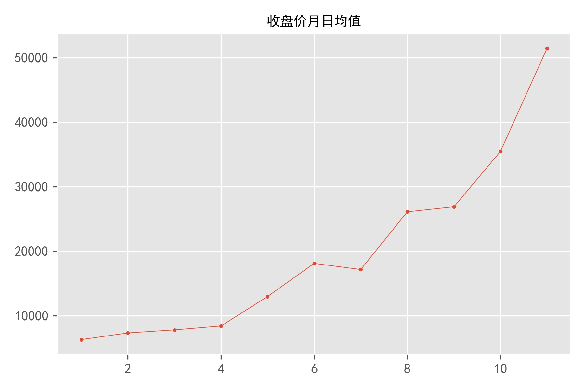

Python Programming
Lecture 12 Downloading Data
12.1 Downloading Data (1)
.CSV
import csv
filename = 'sitka_weather_07-2018_simple.csv'
with open(filename) as f:
reader = csv.reader(f) #iterator
header_row = next(reader)
print(header_row)
for index, column_header in enumerate(header_row): #enumerate
print(index, column_header)
['STATION', 'NAME', 'DATE', 'PRCP', 'TAVG', 'TMAX', 'TMIN']
0 STATION
1 NAME
2 DATE
3 PRCP
4 TAVG
5 TMAX
6 TMIN
Extracting and Reading Data
import csv
filename = 'sitka_weather_07-2018_simple.csv'
with open(filename) as f:
reader = csv.reader(f)
header_row = next(reader)
print(header_row)
for index, column_header in enumerate(header_row):
print(index, column_header)
highs = []
for row in reader:
high = int(row[5])
highs.append(high)
print(highs)
[62, 58, 70, 70, 67, 59, 58, 62, 66, 59, 56, 63, 65, 58, 56, 59, 64, 60,
60, 61, 65, 65, 63, 59, 64, 65, 68, 66, 64, 67, 65]
from matplotlib import pyplot as plt
# Plot the high temperatures.
plt.style.use('seaborn')
fig, ax = plt.subplots()
ax.plot(highs, c='red')
# Format plot.
ax.set_title("Daily high temperatures - 2018-7", fontsize=24)
ax.set_xlabel('', fontsize=16)
ax.set_ylabel("Temperature (F)", fontsize=16)
ax.tick_params(axis='both', which='major', labelsize=16)
#plt.show()
plt.savefig('simple.jpg',dpi=300)
The datetime Module
from datetime import datetime
first_date = datetime.strptime('2018-7-1', '%Y-%m-%d')
print(type(first_date))
print(first_date.strftime('%B %d %Y'))
print(first_date)
<class 'datetime.datetime'>
July 01 2018
2018-07-01 00:00:00
%A Weekday name, such as Monday
%B Month name, such as January
%m Month, as a number (01 to 12)
%d Day of the month, as a number (01 to 31)
%Y Four-digit year, such as 2015
%y Two-digit year, such as 15
%H Hour, in 24-hour format (00 to 23)
%I Hour, in 12-hour format (01 to 12)
%p am or pm
%M Minutes (00 to 59) %S Seconds (00 to 61)
import csv
from datetime import datetime
from matplotlib import pyplot as plt
filename = 'sitka_weather_07-2018_simple.csv'
with open(filename) as f:
reader = csv.reader(f)
header_row = next(reader)
dates, highs= [], []
for row in reader:
current_date = datetime.strptime(row[2], "%Y-%m-%d")
dates.append(current_date)
high = int(row[5])
highs.append(high)
plt.style.use('seaborn')
fig, ax = plt.subplots()
ax.plot(dates, highs, c='red')
# Format plot.
ax.set_title("Daily high temperatures - 2018-7", fontsize=24)
ax.set_xlabel('', fontsize=16)
fig.autofmt_xdate()
ax.set_ylabel("Temperature (F)", fontsize=16)
ax.tick_params(axis='both', which='major', labelsize=16)
plt.savefig('simple.jpg',dpi=300)

import csv
from datetime import datetime
from matplotlib import pyplot as plt
filename = 'sitka_weather_2018_simple.csv'
with open(filename) as f:
reader = csv.reader(f)
header_row = next(reader)
dates, highs, lows= [], [], []
for row in reader:
current_date = datetime.strptime(row[2], "%Y-%m-%d")
dates.append(current_date)
high = int(row[5])
highs.append(high)
low = int(row[6])
lows.append(low)
# Plot data.
plt.style.use('seaborn')
fig, ax = plt.subplots()
ax.plot(dates, highs, c='red', alpha=0.5)
ax.plot(dates, lows, c='blue', alpha=0.5)
ax.fill_between(dates, highs, lows, facecolor='blue', alpha=0.1)
# Format plot.
ax.set_title("Daily high temperatures - 2018", fontsize=24)
ax.set_xlabel('', fontsize=16)
fig.autofmt_xdate()
ax.set_ylabel("Temperature (F)", fontsize=16)
ax.tick_params(axis='both', which='major', labelsize=16)
plt.show()
import csv
from datetime import datetime
from matplotlib import pyplot as plt
filename = 'death_valley_2018_simple.csv'
with open(filename) as f:
reader = csv.reader(f)
header_row = next(reader)
dates, highs, lows = [], [], []
# continue
for row in reader:
try:
current_date = datetime.strptime(row[2], "%Y-%m-%d")
high = int(row[4])
low = int(row[5])
except ValueError:
print(current_date, 'missing data')
else:
dates.append(current_date)
highs.append(high)
lows.append(low)
# Plot data.
#--snip--
12.2 Downloading Data (2)
.JSON
import json
filename = 'btc_close_2017.json'
with open(filename) as f:
btc_data = json.load(f)
date=[]; close=[]; months=[]
for btc_dict in btc_data:
date.append(btc_dict['date'])
months.append(int(btc_dict['month']))
close.append(int(float(btc_dict['close'])))
import matplotlib.pyplot as plt
fig, ax = plt.subplots()
plt.style.use('seaborn')
ax.plot(close, linewidth=0.5, c='red')
ax.scatter(date,close, s=5, c='red')
ax.set_xticks(date[::20])
ax.set_xticklabels(date[::20],rotation=45,fontsize=6)
ax.set_title('Close',fontsize=10)
plt.savefig('close.jpg',dpi=300)
Iterator (迭代器)
Many types of objects in Python that qualify as being iterable (可迭代的), such as list, tuple, dictionary. In Python, the mechanism for iteratioin is based upon the following conventions:
- An iterator is an object that manages an iteration through a series of values. If variable, i, identifies an iterator object, then each call to the built-in function, next(i), produces a subsequent element from the underlying series, with StopIteration exception raised to indicate that there are no further elements.
- Usage: 1. abstract sequence; 2. save memory
import itertools
nums = itertools.count(0,2)
print(next(nums))
print(next(nums))
print(next(nums))
0
2
4
import itertools
nums = itertools.count(0,2)
for i in nums:
if i > 6:
break
print(i)
0
2
4
6
import itertools
cycle_strings = itertools.cycle('ABC')
i = 1
for string in cycle_strings:
if i == 7:
break
print(string)
i = i + 1
A
B
C
A
B
C
import itertools
for item in itertools.repeat('hello', 3):
print(item)
hello world
hello world
hello world
import itertools
nums = itertools.repeat('hello', 3)
print(next(nums))
print(next(nums))
print(next(nums))
print(next(nums))
hello
hello
hello
Traceback (most recent call last):
print(next(nums))
StopIteration
groupby()
from itertools import groupby
for key, value_iter in groupby('aaabbbaaccd'):
print(key, ':', list(value_iter))
a : ['a', 'a', 'a']
b : ['b', 'b', 'b']
a : ['a', 'a']
c : ['c', 'c']
d : ['d']
from itertools import groupby
data = ['a', 'bb', 'ccc', 'dd', 'eee', 'f']
for key, value_iter in groupby(data, len):
print(key, ':', list(value_iter))
1 : ['a']
2 : ['bb']
3 : ['ccc']
2 : ['dd']
3 : ['eee']
1 : ['f']
from itertools import groupby
data = ['a', 'bb', 'cc', 'ddd', 'eee', 'f']
for key, value_iter in groupby(data, len):
print(key, ':', list(value_iter))
1 : ['a']
2 : ['bb', 'cc']
3 : ['ddd', 'eee']
1 : ['f']
zip()
>>> a = [1,2,3]
>>> b = [4,5,6]
>>> c = [4,5,6,7,8]
>>> zipped = zip(a,b)
>>> zipped
#iterator
>>> list(zipped)
[(1, 4), (2, 5), (3, 6)]
>>> list(zip(a,c))
[(1, 4), (2, 5), (3, 6)]
>>> a = [1,2,3]
>>> b = [4,5,6]
>>> c = [4,5,6,7,8]
>>> zipped = zip(a,b)
>>> list(zip(*zipped))
[(1, 2, 3), (4, 5, 6)]
>>> zipped = zip(a,b)
>>> x,y = zip(*zipped)
>>> print(x)
(1,2,3)
from itertools import groupby
import matplotlib.pyplot as plt
xy_map = []
for x, y in groupby(sorted(zip(months, close)), lambda w: w[0]):
y_list = []
for first, second in y:
y_list.append(second)
xy_map.append([x, sum(y_list) / len(y_list)])
x_unique, y_mean = zip(*xy_map)
fig, ax = plt.subplots()
plt.style.use('seaborn')
ax.plot(x_unique, y_mean, linewidth=1)
ax.scatter(x_unique, y_mean, s=20)
ax.set_title('Close',fontsize=10)
plt.savefig('close.jpg',dpi=300)

Summary
- Downloading Data
- Reading: Python Crash Course, Chapter 16